October 2026
Why the Akshar App
The model is shared. The system is not.
Akshar already runs individual children, peer learning, FLN, tablets, recycling, points, and GSP across schools and districts. Day-to-day operations still run on paper, Drive, and people chasing data. An app is preferred because those jobs need one shared record.
01
Parental consent has no audit trail
Consent is on paper. There is no record of who consented, to what, when, or whether it was withdrawn. An app can keep that trail, with paper only as backup.
02
Parents are not informed
Progress and school life depend on whoever can reach them. An app lets a parent link their child and see updates on the phone they already have.
03
Teachers set up classes by hand
Routine, homework, and notices are still assembled manually. An app makes class setup the day’s work, not a stack of forms.
04
Who needs attention is a walkthrough
Teachers scan by eye for students who are falling behind. An app can surface who needs a remedial group.
05
Kolibri is not the whole school day
Learning is already digital. Homework, progress, points, and class requests are not. The Akshar App connects the rest of school — on the parent’s phone.
06
Staff training is another folder
Twenty hours a year of L&D sit apart from operations. An app can host materials, progress, and certificates next to the work.
07
No single view across schools and geographies
Students, assessments, attendance, recycling, peer learning, and points are entered by district teams and merged by hand. An app is one dashboard from the same source — not Head Office as the database.
Individual
Parent, teacher, studentConsent trail, progress at home, class routine, remedial groups, Kolibri plus the rest of school.
Team
GSP and Head OfficeStructured data, role-based access, staff L&D, school and HO dashboards.
Organisation
The networkOne view across schools and geographies. Notices, directory, policies.